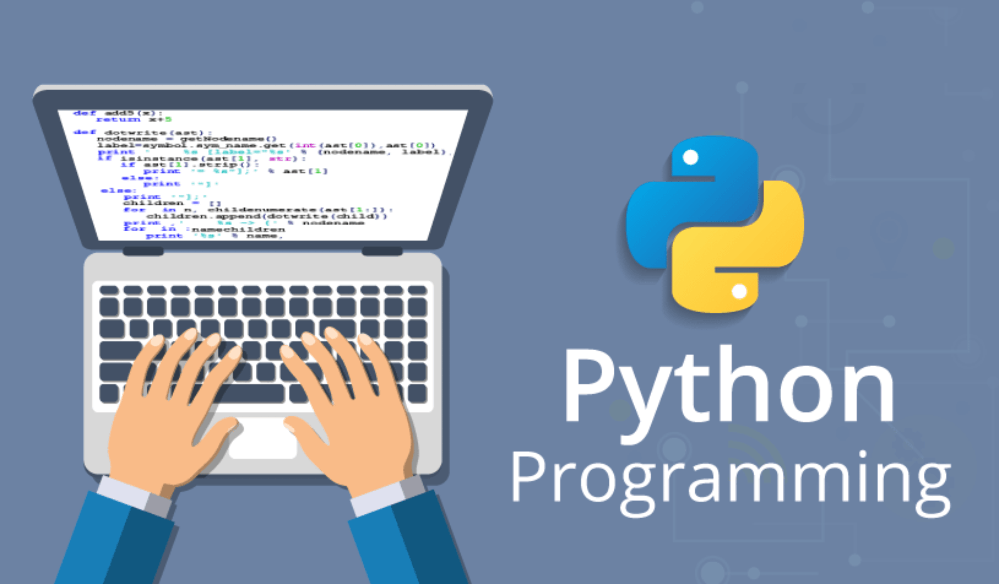

Автор языка Python назвал его в честь британского комедийного шоу «Monty Python», которое было популярно в начале 1970-х годов. Это телешоу позволяло автору расслабиться и отвлечься от разработки языка. Однако, несмотря на настоящее происхождение названия, для людей более очевидно связывать Python со словом «змея». Этому также способствует логотип, на котором изображена рептилия. И хотя создатель языка не раз говорил, что название никак не связано со змеями, повлиять на мнение общества так и не удалось.
Алфавит языка Python (набор допустимых символов) состоит из букв латинского алфавита (причём заглавные и строчные буквы различаются ), цифр и специальных знаков (знаков препинания, арифметических и других). Русские буквы могут использоваться только при выводе текста на экран и в комментариях к программе.
Служебные слова – цепочки символов, имеющие фиксированное смысловое значение.
Величины в программе представлены в виде констант и переменных.
Константы – величины, не изменяющие своего значения при выполнении программы.
Переменные – величины, которые могут изменять свое значение при выполнении программы. Каждая переменная имеет имя, тип и значение.
Имя переменной (идентификатор) – любая отличная от служебных слов последовательность латинских букв, цифр и символа подчеркивания "_", не может начинаться с цифры.Язык Python чувствителен к регистру. Переменная Z и z – разные переменные. Python, в отличие от многих языков, не требует описания переменных.
